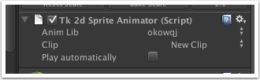

Documentation
Script Reference
Forum
Documentation
Script Reference
Forum

The sprite animator is a support behaviour attached to a sprite class. It plays a sprite animation clip on the attached sprite.
The sprite animator will work with any sprite type, but be careful about animating very large tiled sprites, the polygon count means updating that will cost a lot performance than animating a single sprite.
AnimLib - Selects an animation library.
Clip - Selects a clip from the selected animation library
Play automatically - Plays this clip automatically on start up.